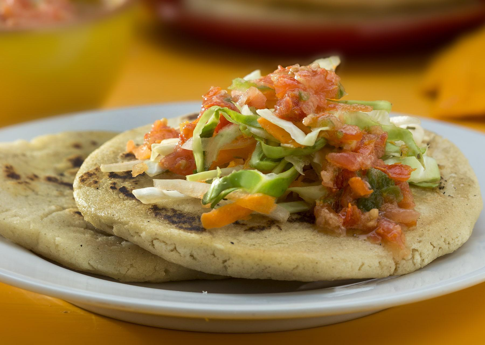

Pupusas

Description
This is a fairly authentic version of the popular Salvadorean dish.
It does take some time, however it is well worth the effort! You can
purchase pre-made chicharrón at specialty markets, however this
recipe tastes just like it.
Ingredients
Curtido
- 1/2 cabbage
- 1 carrot
- 1 tablespoon of oregano
- 1 onion
- 4 cups boiling water
- 1 cup of whitw vinager
- 2 teaspoons of salt
Chicharrón
- 1 teaspoon vegetable oil
- 1 lb boneless pork
- 1 tablespoon salt
- 1 tomato
- 1/2 green paper
- white onion
Dough
- 4 cups masa
- 2 teaspoons salt
- 3 cold water
Filling
- 1 cup mozzarella
- 1 cup refried bean
- 1 tablespoon oil
Steps
- Make the curtido: In a large bowl, combine the cabbage, onion,
and carrots. Pour the boiling water over the vegetables and toss.
Let sit for 10 minutes, then drain.
- In a liquid measuring cup or small bowl, combine the vinegar,
oregano, and salt. Pour over the slaw and toss to coat. Once
thoroughly mixed, transfer the curtido any any leftover liquid
in the bowl to an airtight jar or container.
- Chill for at least 20 minutes in the refrigerator, or chill
overnight for best results.
- Make the chicharrón: Heat the vegetable oil in a large pan over
medium-high heat. Add the pork shoulder and salt. Cook for 15
minutes without disturbing. If the pork is browning too quickly,
reduce the heat to medium. Turn the pork over and let cook on the
other side for 10 minutes more, or until crispy and golden brown.
- Transfer the pork to a food processor and add the tomato, green
bell pepper, and onion. Pulse until a thick paste forms. The
mixture should not be watery. Set aside.
- Make the pupusa dough: In a large bowl, whisk together the masa
harina and salt, then add the water. Use your hands to mix until
the dough comes together with a clay-like texture.
- Fill a small bowl with water and a bit of oil and set near your
work station. You’ll wet your fingers with the mixture as you
work to keep the dough from sticking to your hands.
- Take a golf ball-sized portion of dough and roll into a ball,
then flatten into an even round.
- Fill the dough round with ½ tablespoon chicharrón paste, 1
teaspoon refried beans, and 1 teaspoon mozzarella cheese.
Fold the dough over the filling until it’s completely sealed.
Then, pat out the ball between your hands until flat. If the
pupusa cracks, patch it with a bit of dough and a little oil.
Repeat with the remaining ingredients.
- Heat a large pan or griddle over medium heat. Brush with vegetable
oil, then place 2-3 pupusas on the pan and cook for 2-4 minutes,
or until the bottoms are golden brown. Flip and cook on the other
side for 2-4 minutes more, until golden brown and warmed through.
Repeat with the remaining pupusas.
- Serve the pupusas with curtido.
- You are Done! Enjoy!!
Home